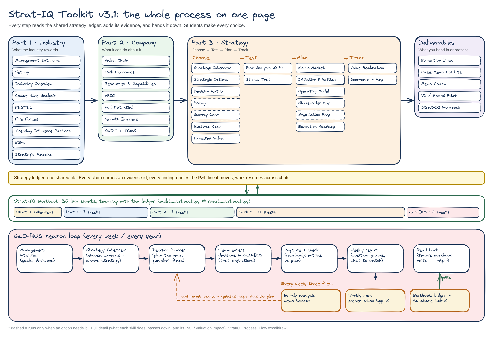
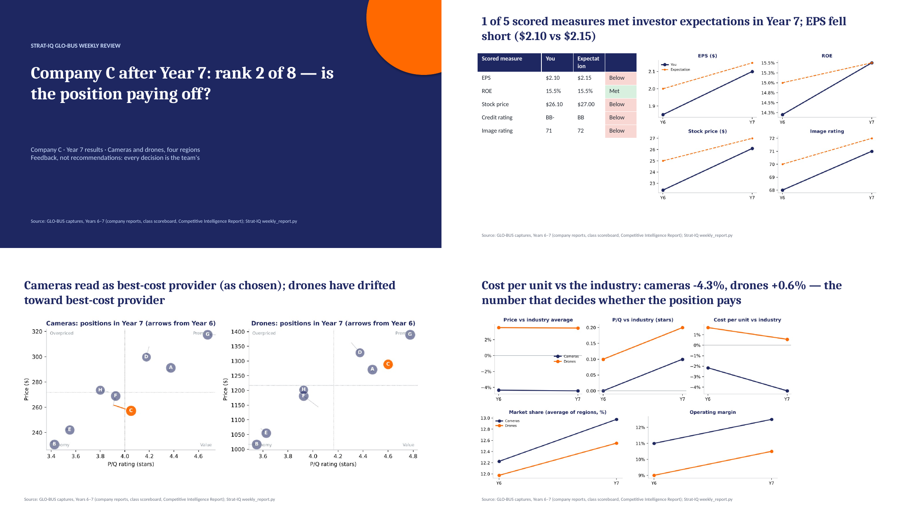
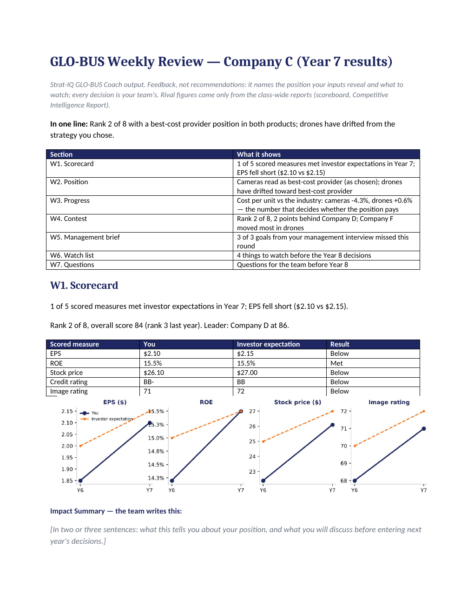

The whole process on one page
Every step reads one shared strategy ledger, adds its evidence and hands it on. Students make every choice; Strat-IQ shows the evidence, does the arithmetic and asks the questions.


Detail for every skill (what it does, what it passes down, its P&L impact, the workbook sheet it fills): detailed process flow.

Three parts, one evidence base
Start: management interview
The central problem, decisions, goals and questions management gave you. Every later step is judged against them.
Part 1 · The industry
Industry overview, competitive analysis from 10-Ks, PESTEL, Five Forces, trending factors, weighted KSF scorecard, strategic maps and blue-ocean candidates.
Part 2 · The company
Value chain, unit economics (LTV/CAC), resources and capabilities, VRIO, full-potential profit bridge, growth barriers, SWOT and TOWS.
Part 3 · The strategy
Positioning, options, decision matrix, business case with tornado and Monte Carlo, expected value with a Bayesian pilot, stress test, go-to-market, roadmap and Balanced Scorecard.
Every GLO-BUS week: three files
After each round, Strat-IQ reads the team's results and the class-wide reports (never another team's screens) and returns feedback, not answers: no decision values and no list of moves.


Weekly analysis memo (.docx)
Sections W1-W7: scorecard, position vs the chosen strategy, cost trends, the contest, the management-brief check, what to watch, questions. Impact Summaries are the team's.
Weekly exec presentation (.pptx)
Nine slides with headline titles and charts, plus speaker notes that end with the question the instructor is likely to ask.
Workbook: ledger + database (.xlsx)
36 live sheets, Season by Year, Competition by Year and KPI Charts. Two-way: the team's edits are read back into the ledger.
Install in Claude.ai (about 10 minutes)
- In Settings → Capabilities, turn on Code execution and file creation.
- Upgrading from StratOS? Delete every skill whose name starts with
stratos-. - Download
stratiq-toolkit-skills.zipfrom the latest release, unzip it once, and upload the 40 skill zips inside (Upload skill). - Create a Project and add
industries.json(it includes the GLO-BUS camera and drone industries) to its knowledge. - Open a chat in the Project and type "Run Strat-IQ."
Full steps with screenshots: install guide · Parts 2-3 walkthrough: Parts 2 + 3 guide.
Built for the classroom, honest by design
Students choose
The Strategy Interview never picks; the Memo Coach returns questions, never text.
Teams enter every decision
GLO-BUS capture is read-only and never handles passwords; the plan check only flags differences.
Every claim has a source
Figures without a source are marked; every finding names the P&L line it moves.